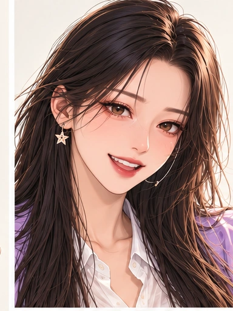
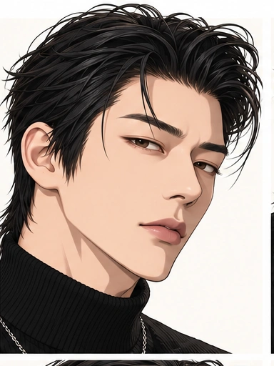
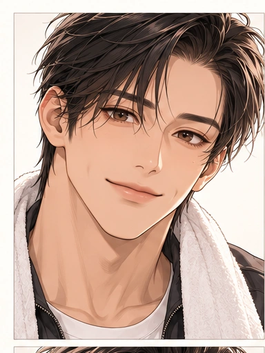
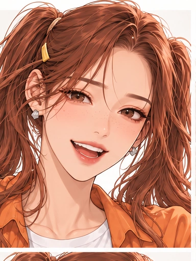
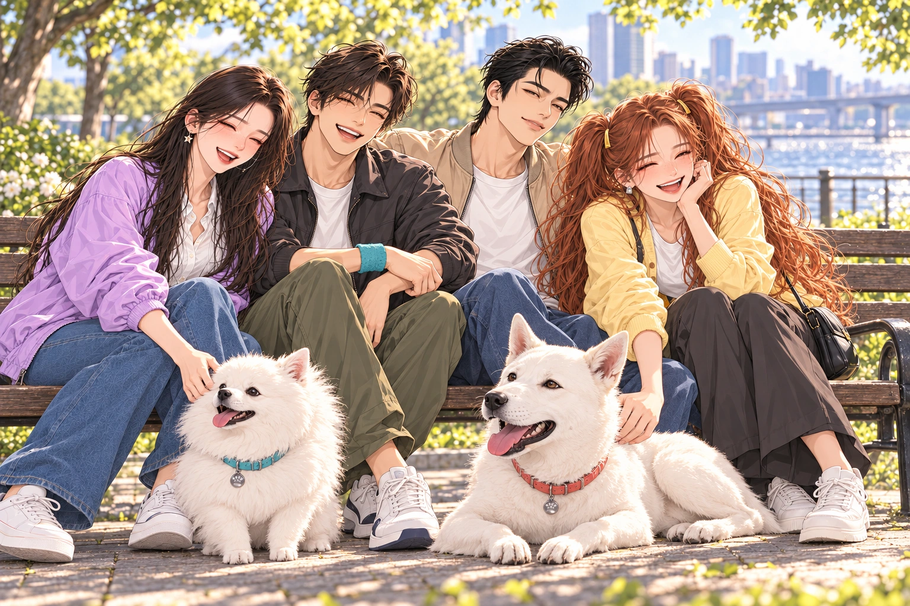

JIN HANEUL · SPECIAL EDITION
코트가 끝난 뒤에도, 나의 하루는 계속된다.여행과 음악, 춤과 사랑으로 이어지는 새로운 시작.




세 친구의 소란스러운 아침.그리고 국가대표 세터 하늘 앞에 놓인가장 중요한 한 경기.

본편 원화로 돌아보는 열두 순간.갓페인터의 시선으로 새로 그린 세 작품.크게 보고, 이야기를 다시 찾아가는 특별 전시.
선수에서 여행 크리에이터로
서툰 마음에서 솔직한 선택으로
트레이너 · DJ, 다시 찾는 무대
댄스 · 버스킹 · 크리에이터